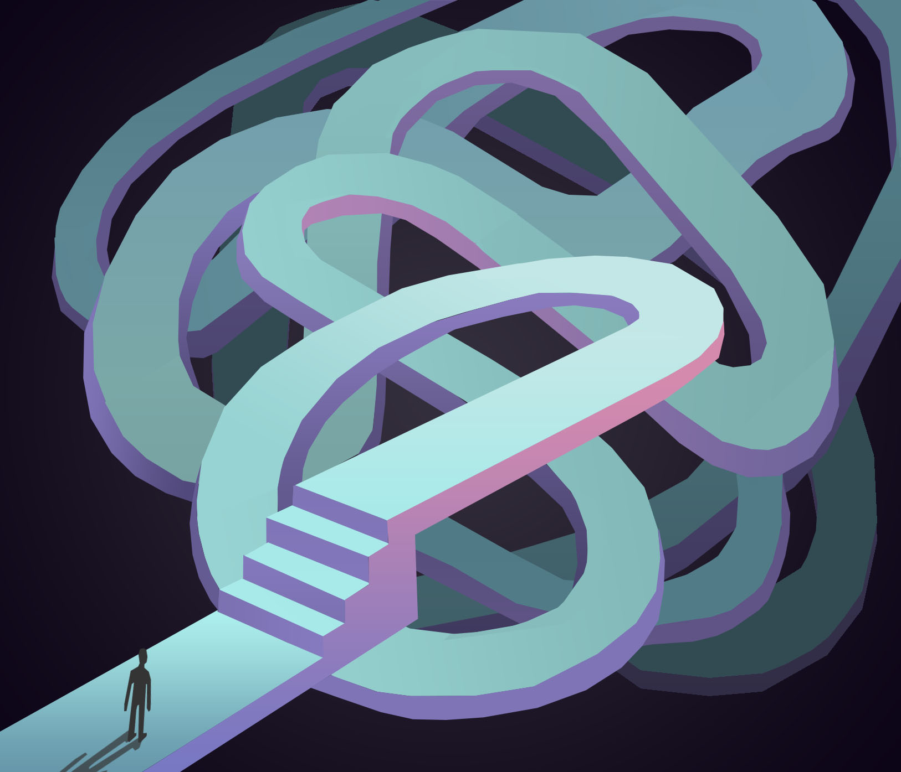

digital art ✐
python graphics series
this video is part of a series of calming visuals i created with python turtle graphics. the code operates using nested for and if loops, where the RGB color values vary incrementally every time the invisible turtle moves a certain amount of degrees. then, once a specific amount of rotations are made, the pen color fades into black. i created the graphic with intention to emulate natural breathing patterns, encouraging calmness and awareness as you watch the lines flow.
